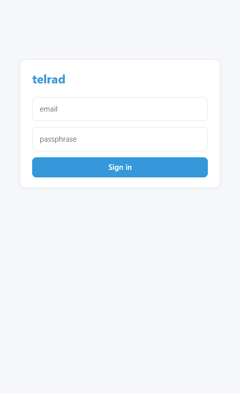
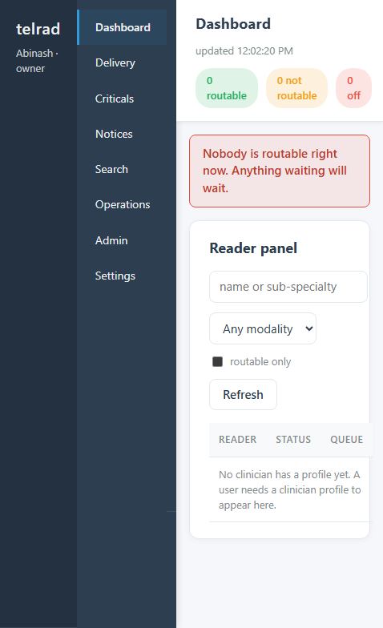
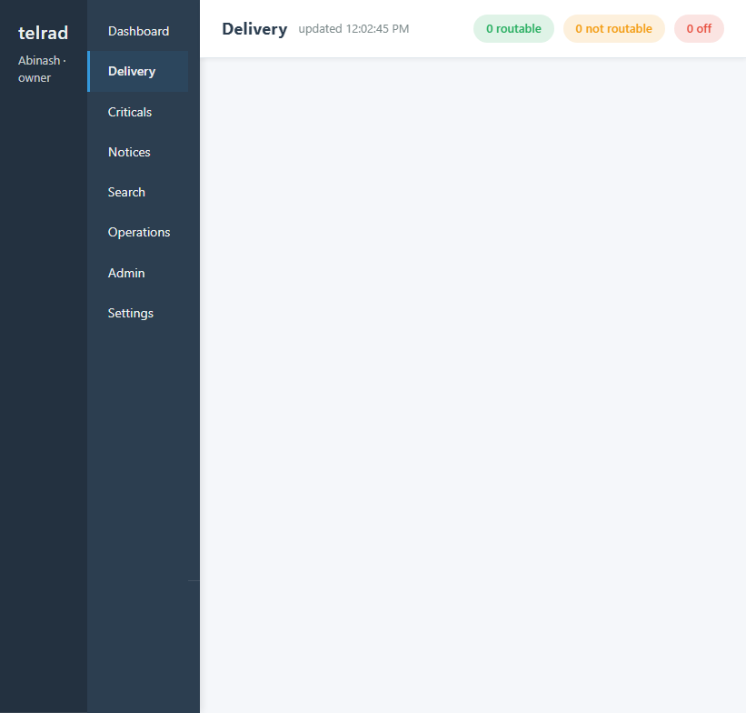
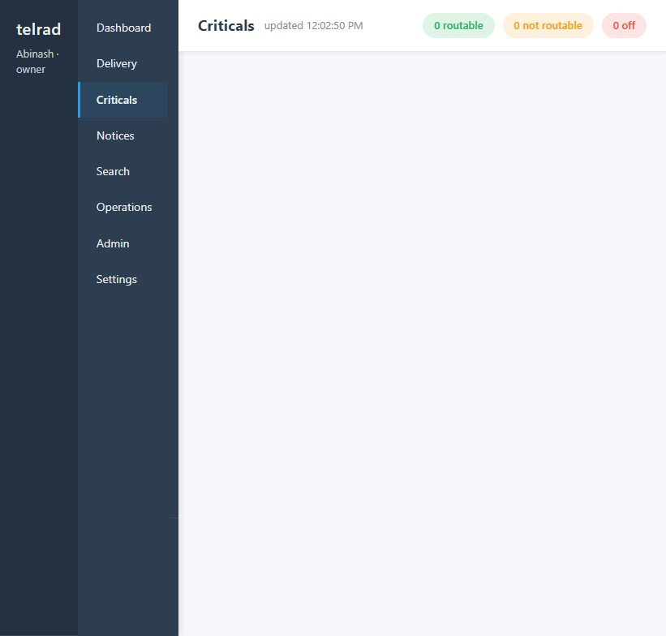
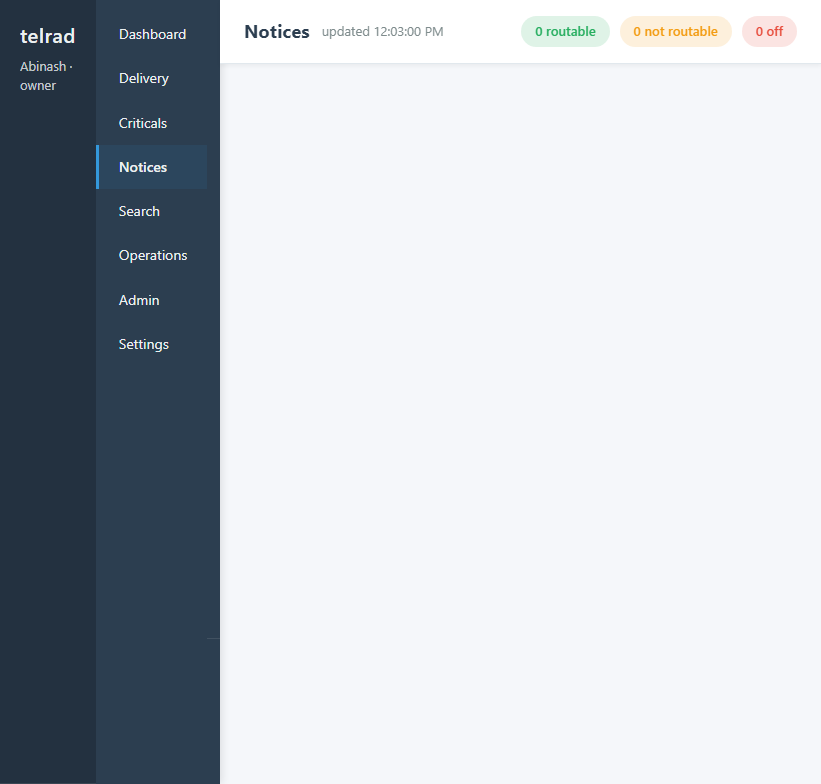
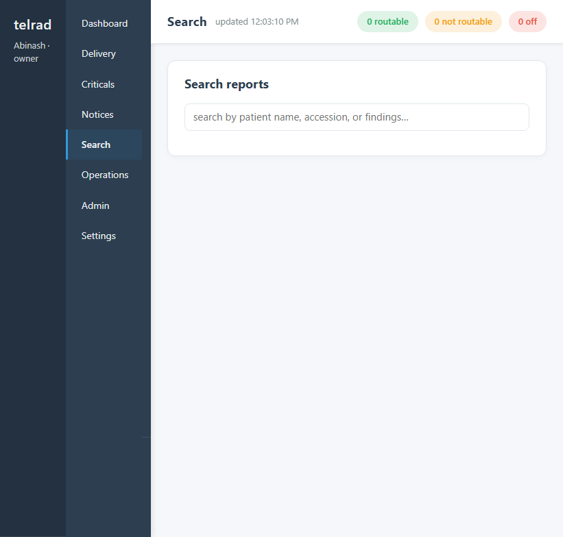
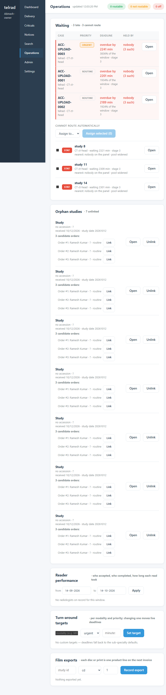
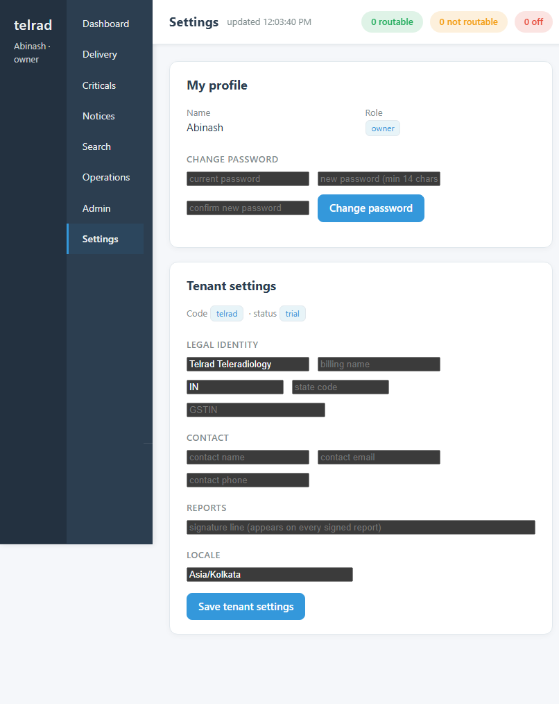

Open https://pacs.caredeoghar.com/ in your browser. You will see the login form.

Figure 1 — Login form. Enter your email and passphrase, then click Sign in.
Steps
Enter your registered email address.
Enter your passphrase (minimum 14 characters).
Click Sign in.
Two-factor authentication (2FA): If your account has 2FA enabled, you will be prompted for a 6-digit code from your authenticator app (Google Authenticator, Authy, etc.) or a backup code after entering your password.
Session
Sessions last 12 hours. If your session expires while the tab is open, the page returns to the login form. Your unsaved work on a report draft is preserved in the browser until you refresh.
2. Dashboard — Reader panel
The Dashboard is the first page after login. It shows who is available to read cases right now.

Figure 2 — Dashboard. The Reader panel shows every clinician with a profile, their status, queue load, modalities, and roster window.
What you see
Counts bar (top right): green = routable readers, amber = not routable (paused/away/at-cap), red = signed off.
Reader panel table: one row per clinician who has a profile. Columns: name/grade, status (with colour dot), queue load (held / max), modalities and sub-specialties, roster window.
Filters: search by name or sub-specialty, filter by modality, "routable only" checkbox.
For readers
If you are a radiologist or reviewer, your own status card appears above the panel. Use the buttons to declare your availability:
Take cases — you are receiving offers.
Pause — you stop receiving new offers but keep cases already held.
Step away — same as pause, signals a longer break.
Sign off panel — you are removed from routing entirely.
Tip: The panel refreshes every 5 seconds. If the "feed lost" banner appears, the colours may be stale — click Refresh.
3. My Cases — Worklist
Visible to radiologists and reviewers. Shows every case currently held by you, including offers waiting for your accept/decline.
What you see
Offered cases — cases the dispatcher has offered to you. Each shows priority, modality, sub-specialty, accession, wait time, and a countdown until the offer lapses.
Held cases — cases you have accepted. Shows when you accepted them and whether a draft report exists.
Actions
Accept — takes the case. It moves to your queue and the SLA clock starts.
Decline — sends the case back to the pool. You must give a reason.
Open — opens the DICOM viewer for that study.
Share — opens WhatsApp with a link to the study.
Bulk accept — when multiple offers are waiting, select checkboxes and accept them all at once.
Offer expiry: If you do not accept or decline within the countdown, the offer lapses and rotates to the next eligible reader. Repeated lapses are audited.
4. Reports — Signed and awaiting review
Two lists: reports you have signed (and their state), and reports signed by others that are awaiting your countersignature.
Awaiting a second name
Reports that have been signed by one radiologist and need a second name. Each row shows the accession, modality, version, author, and whether you are permitted to clear it. If you cannot clear it, the reason is shown (e.g. "you are the author").
Reports I signed
Your own signed reports. Each row shows the state (signed, verified, delivered), version, timestamp, and second name if applicable.
Actions
Review — opens the viewer to countersign.
Open — opens the viewer without signing.
Rate — rate a report on a 1–5 scale with an optional comment.
Share — WhatsApp link.
5. Delivery — Releasing reports to clinics
Visible to center desk staff, owners, and console operators. Shows every signed report that has not yet been released to the referring clinic.

Figure 3 — Delivery page. Empty when no reports are awaiting release. Each row will show accession, modality, patient, state, and a Deliver button.
What each row means
Deliver button — the report is ready. Clicking it releases the PDF to the clinic, records the SHA-256 hash, and moves the report to delivered.
Amber status — the report cannot be released yet. The reason is shown: "awaiting a second name", "not signed yet", "already sent", or "a finding is unanswered".
Action needed — flag a report for attention with a message. The flag stays until someone clears it.
PDF — download the rendered report PDF.
Open — open the viewer (operator roles only).
Critical findings gate: A report with an unacknowledged critical finding cannot be delivered. The finding must be marked as answered (with the name of the person who was telephoned) before the Deliver button appears.
6. Criticals — Unacknowledged findings
Visible to desk staff and operators. Shows every critical finding that has been declared by a reader but not yet acknowledged by the referring clinic.

Figure 4 — Criticals page. Empty when no critical findings are awaiting acknowledgement. Each row shows the finding, who declared it, when, and how long it has been waiting.
Workflow
A reader signs a report and declares a critical finding from a closed list (e.g. "acute intracranial haemorrhage").
The reader names the person they telephoned at the referring clinic.
The report is held in the critical queue until someone at the clinic acknowledges it.
If nobody acknowledges within the SLA window, the worker stamps a breach and the row turns red.
Today "alert" means the board, not a phone call. The system records the acknowledgement; it does not place calls. The reader declares who they telephoned; the desk follows up if the acknowledgement does not arrive.
7. Notices — Unsent notifications
Shows every notification that has been queued but not yet delivered to a referring clinic. Includes email notices for report delivery and critical findings.

Figure 5 — Notices page. Shows unsent notifications with their channel (email), recipient, attempt number, and next retry time. "Dead" rows have given up after exhausting retries.
Status colours
Green — pending, will retry at the scheduled time.
Amber — failed, will retry with backoff.
Red (dead) — exhausted all retries. A person must intervene.
Tip: A "dead" notice usually means the recipient email address is wrong. Fix the address in the tenant settings and the notice can be retried manually.
8. Search — Find any report
Available to all roles. Search across all reports you have permission to see by patient name, accession number, or findings text.

Figure 6 — Search page. Type a patient name, accession, or finding to search. Results appear below the search box.
Accession numbers can be searched without the full string.
Findings text is searched across all versions of the report.
Center-scoped users only see their own tenant's reports.
9. Operations — Late board, orphans, performance
Visible to owners and console operators. The operator's working board: what is running out, what cannot be routed, and how the system is performing.

Figure 7 — Operations page. Shows the Waiting board (late cases, second-name queue, unrouteable cases), Orphan studies, Reader performance, Turn-around targets, and Film exports.
Waiting board
Three sub-sections:
Late cases — cases past their SLA deadline. Shows how overdue, who holds them, and the escalation stage. Click Open to view the study.
Awaiting second name — signed reports waiting for countersignature. Shows author and wait time.
Cannot route automatically — cases with no eligible reader. Select cases and assign them manually to a named radiologist.
Orphan studies
Studies that arrived but could not be matched to an order or patient. Each orphan shows candidate orders it might link to. Use Link to attach it to the correct order, or Unlink to detach it.
Reader performance
Date-range report of who accepted, who completed, and how long each read took. Set a date range and click Apply.
Turn-around targets
Set SLA targets per modality and priority. Changing a target moves the live deadlines for cases that have not yet breached.
Film exports
Record a film/disc export against a study. Each export becomes a line item on the next invoice for that tenant.
10. Admin — Users, sites, tariffs, audit, billing
Configuration pages for owners and console operators. Each card is independent.
Create and manage user accounts. Each user has a role: owner, console, center_staff, radiologist, or reviewer. Radiologists and reviewers need a clinician profile (council registration, grade, modalities, sub-specialties, max queue, night charge).
Add user — creates an account with a temporary password shown once.
Status dropdown — change between active, suspended, and disabled.
Reset password — generates a new temporary password shown once.
Imaging sites
Centers that send studies. Each site has an AE Title for DICOM routing and an optional CIDR allowlist. Manage tokens for the upload agent.
Tariffs
Price per study by modality and priority. Night multipliers apply automatically. The tariff in force on the delivery day is used for billing.
Image retention
Per-tenant pixel retention in days. NULL keeps images forever. The sweep purges pixels only — reports, billing, and audit records are never deleted. A pinned study is never swept.
Audit trail
Every mutation is recorded: who, when, what changed, before and after values. The chain is hash-linked so tampering is detectable. Export as CSV.
Billing
Preview billable events, create draft invoices, issue them, and export as CSV. Invoices are numbered in an unbroken financial-year sequence per tenant.
11. Settings — Profile and tenant configuration
Available to all roles. Two sections: your own profile, and (for owners) the tenant's configuration.

Figure 9 — Settings page. My profile with password change, and Tenant settings with legal identity, contact, reports signature line, and locale.
My profile
Name and Role — shown for reference, not editable here.
Change password — enter your current password, then a new one (minimum 14 characters), confirm it, and click Change password.